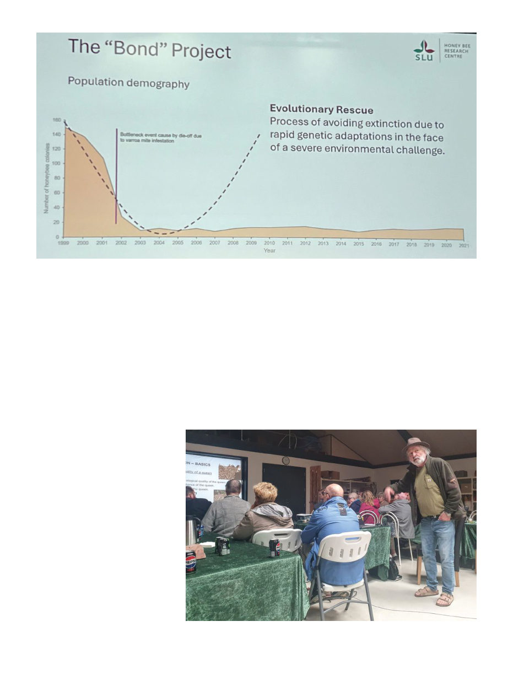

December 2025
1317
tional groups showing off their latest
equipment and services, and always,
always, everywhere you looked, peo-
ple having a great time talking with
each other about all things bees.
Part of the fun of big conferences
like this is seeing old friends, espe-
cially if you’ve been in the industry
for a long time and all over the world.
I ran into someone I first met in Tan-
zania in 2014, someone else from
western Ethiopia 2012, and Dr. Sue
Cobey who taught me instrumental
insemination back in 2011 in Califor-
nia. The conference officially declared
an “official pub” in central Copenha-
gen, which was actually a great idea
because rather than being dispersed
all over the city many of us all ended
up in the same place every evening.
I also organized what I hope will be
a new tradition getting the editors of
various bee magazines around the
world together for dinner – Mea Mc-
Neil represented the American Bee
Journal and it was lovely to meet her.
Usually a major undercurrent of
the conference is the competing bids
to host the next-after-next confer-
ence. The next one in 2027 will be in
Dubai (Tanzania won the vote last
time but their venue won’t be fin-
ished in time — perhaps they’ll try
for a later date), but the host location
for 2029 was to be chosen this time.
There was only one contender, which
made things a bit less suspenseful —
in 2029 Apimondia will be hosted in
Leipzig, Germany.
I always enjoy the technical tours
associated with Apimondia. In this
case I actually ended up on an unof-
ficial technical tour with a Finnish
group that had chartered a bus all the
way from Finland (via ferry across
the Baltic), visiting various beekeep-
ing-related sites along the way, and
they had room for a few more to join
the 33 of them on their bus the day
after Apimondia ended.
We drove about an hour west to the
central-west of Zealand, the island on
which Copenhagen is located (New
Zealand is actually named after a
different Zealand, a Dutch province).
There we arrived at the Buckfast
queen-rearing operation that Keld
Brandstrup ran for many decades
(he’s in the process of handing it over
to one Mogens Mundt).
Keld had been a teacher, until one
Friday in the early 1970s while he was
drinking white wine with a friend on
the porch they heard a buzzing noise,
a swarm! “You’re going to become a
beekeeper!” his friend informed him.
He wasn’t quite so sure but he did put
it in a hive box. After a few years of los-
ing most of his colonies every winter
A slide from "The 'Bond' Project" in Gotland shows that in 20 years the hive numbers never did make the recovery they'd hoped for.
"No video, I don't want to show up on YouTube! But you can take pictures." Danish
queen breeder Keld Brandstrup tells us about his operation.